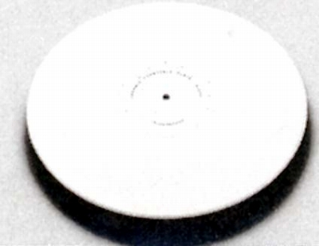
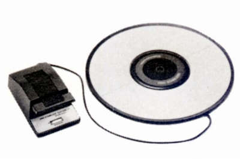
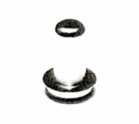
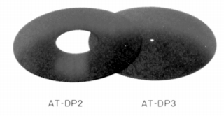
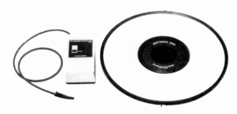
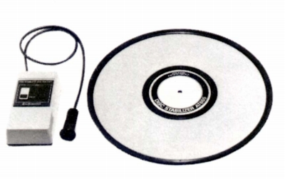
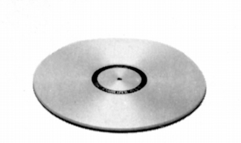
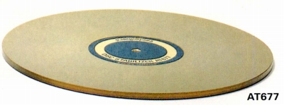
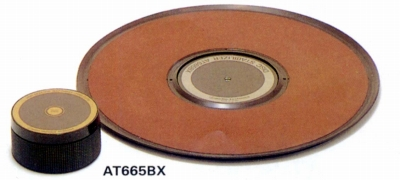

ターンテーブル・シート
テクニカではスタビライザーとしていたが、他社製品の区分にあわせ、ターンテーブルシートに相当する製品。
セラミックや金属のハード系の製品と、吸着型の製品がある。
注 吸着型ディスク・スタビライザーは、エッジのゴムの状態に性能が強く左右されます。中古で購入する場合、
経年劣化は前オーナーの使い方・環境によりかなり差があると思います。ご注意ください。
AT600

■価格 22,000円
■備考 セラミック・ターンテーブル・プレート
焼結アルミナ製
直径292.0�o 厚さ6�o 重さ1,350g。
スタビライザーAT618、638との併用を推奨。
AT666

■価格 37,000円
■備考 全面吸着型ディスク・スタビライザー
吸着力250kg マニュアルポンプ式
直径300.0�o 厚さ9.5�o 重さ1,200g。
スピンドル長11�o（テーパー部分除く）のターンテーブルで使用可
別売りのアダプター「AT-DP1」でスピンドルが短いモデルに対応可能。
また別売りのスペーサー「AT-DP2」及び「AT-DP3」で変形ターンテーブルに対応。
なおこれらオプションはAT666EXと共通。

「AT-DP1(600円)」＝長さ9.5�o以下のスピンドルのプレイヤーで使用。

「AT-DP2(600円)」＝ターンテーブル中央が高くなっている製品で使用。
「AT-DP3(600円)」＝ターンテーブル外周にリブがあり、プレートと密着しない場合に使用。
AT666EX

■価格 40,000円
■備考 全面吸着型ディスク・スタビライザー
電動サンクション・システム（ユニット AT661) 電源はDC3V
直径300.0�o 厚さ9.5�o 重さ1,400g。
プレートはAT666と同じもの。
（オプション）
AT-666P
スタビライザー・プレート 33,000円
AT-661 サンクション・ユニット 7,000円(AT666で使用可）
AT665

■価格 20,000円
■備考 全面吸着型ディスク・スタビライザー
電動サンクション・システム
電源はDC3V
直径305�o 厚さ5�o 重さ550g。
ゴムシートとほとんど変わらない厚さ・重さにした普及機。
こちらはセンター吸引式。
AT676

■価格 15,000円
■備考 1.5"のテーパー加工したアルミ合金プレート。
直径289�o 厚さ 外周7�o 内周4.5�o 重さ980g。
スタビライザーAT673等との併用を推奨。
AT677

■価格 20,000円
■備考 基本構造はAT676と同じ。
直径289�o 厚さ 外周7�o 内周4.5�o 重さ980g。
材質を硬質サファイヤ結晶成長被膜のテクニハード材に変更。
AT665BX

■価格 30,000円
■備考 全面吸着型ディスク・スタビライザー
電動サンクション・システム
電源はDC3V
直径304�o 厚さ5�o 重さ約1,000g。
シートを黄銅製に変更し、サンクションユニットをスタビライザーウェイト形式に変更。
センター吸引式。
プレート交換
12,600円
テクニカのインデックスへ